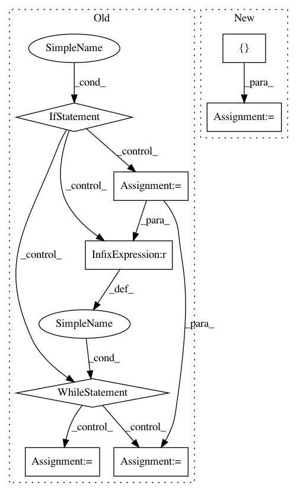

e24625095a33a5c9a2d016018203938e9bb2ccbf,keras/backend/cntk_backend.py,,rnn,#Any#Any#Any#Any#Any#Any#Any#Any#,1308
Before Change
"variable-length sequences. Please specify a "
"static length for your sequences.")
if need_convert:
if go_backwards:
inputs = reverse(inputs, 1)
inputs = C.to_sequence(inputs)
j = 0
while j < len(constants):
if isinstance(constants[j], list):
i = 0
while i < len(constants[j]):
if _get_dynamic_axis_num(constants[j][i]) == 1:
constants[j][i] = C.sequence.broadcast_as(constants[j][i], inputs)
i += 1
else:
if _get_dynamic_axis_num(constants[j]) == 1:
constants[j] = C.sequence.broadcast_as(constants[j], inputs)
j += 1
if mask is not None and not has_seq_axis(mask):
if go_backwards:
mask = reverse(mask, 1)
if len(int_shape(mask)) == 2:
After Change
rnn_inputs = C.to_sequence(rnn_inputs)
rnn_constants = []
for constant in constants:
if isinstance(constant, list):
new_c = []
for c in constant:
In pattern: SUPERPATTERN
Frequency: 4
Non-data size: 8
Instances
Project Name: keras-team/keras
Commit Name: e24625095a33a5c9a2d016018203938e9bb2ccbf
Time: 2018-04-14
Author: nisargjhaveri@users.noreply.github.com
File Name: keras/backend/cntk_backend.py
Class Name:
Method Name: rnn
Project Name: prody/ProDy
Commit Name: 223584e2a0b97b006b6ac944253e2573963a7a88
Time: 2018-09-25
Author: jamesmkrieger@gmail.com
File Name: prody/proteins/starfile.py
Class Name:
Method Name: parseImagesFromSTAR
Project Name: dit/dit
Commit Name: 37b54afef51c7430f8fa00db2f07e3532a7408da
Time: 2013-10-01
Author: chebee7i@gmail.com
File Name: dit/distribution.py
Class Name: BaseDistribution
Method Name: zipped
Project Name: michaelhush/M-LOOP
Commit Name: a334cd6f04461ca8d57f35f0ebde68f5520fd689
Time: 2020-06-15
Author: zakven@mit.edu
File Name: mloop/neuralnet.py
Class Name: SingleNeuralNet
Method Name: load